讓人感覺這個地方「已經存在很久了」。
Making a place feel like it has always been here.
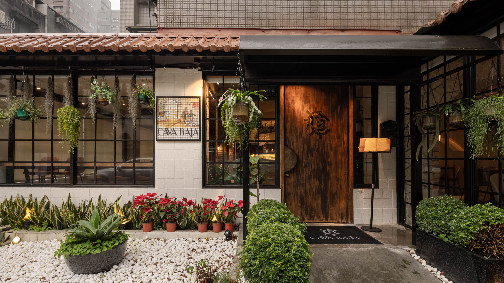
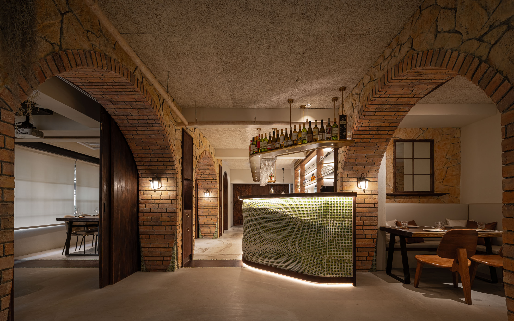
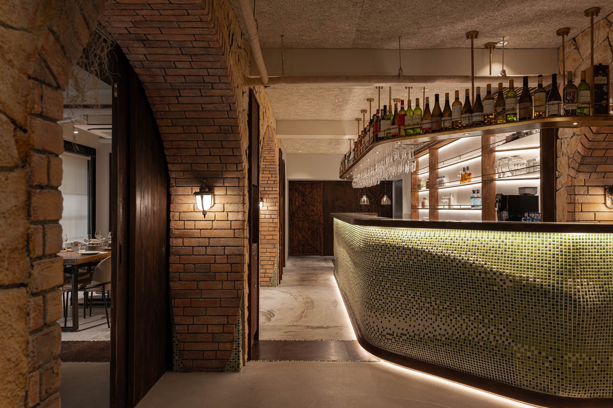
01
Cava Baja 要做的不是「西班牙風格」，而是那種走進老酒館之後身體自然鬆下來的感受。磚牆、木門、馬賽克吧台、鑄鐵格柵——每個材質都在服務同一件事。庭院作為緩衝區，讓進入成為一個有節奏的過程，而不是直接沖進室內。
Cava Baja is not about Spanish style — it is about the feeling of walking into an old bar and having your body relax without being asked. Brick walls, wooden doors, mosaic bar top, cast-iron grilles — every material serves the same purpose. The courtyard acts as a buffer, giving entrance a rhythm rather than an abrupt arrival.
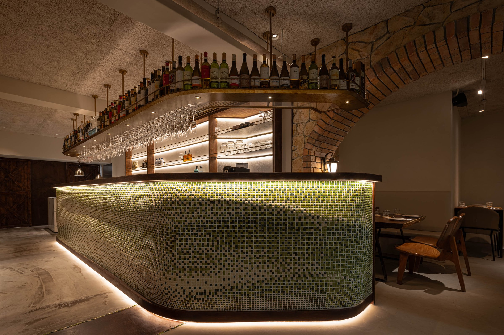
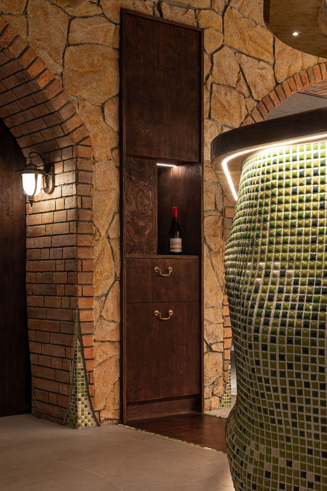
02
磚牆和鑄鐵格柵不是風格選擇，是時間感的建構。讓一個空間看起來「已經存在很久了」，需要的不是仿舊，而是材質本身的厚度。
Brick walls and cast-iron grilles are not a style choice — they are the construction of a sense of time. Making a space feel like it has always been here requires not imitation of age, but the inherent weight of the materials themselves.
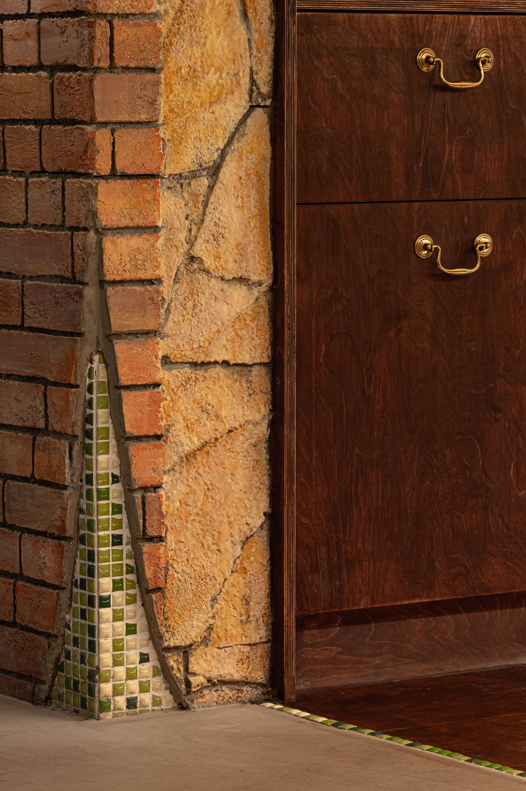
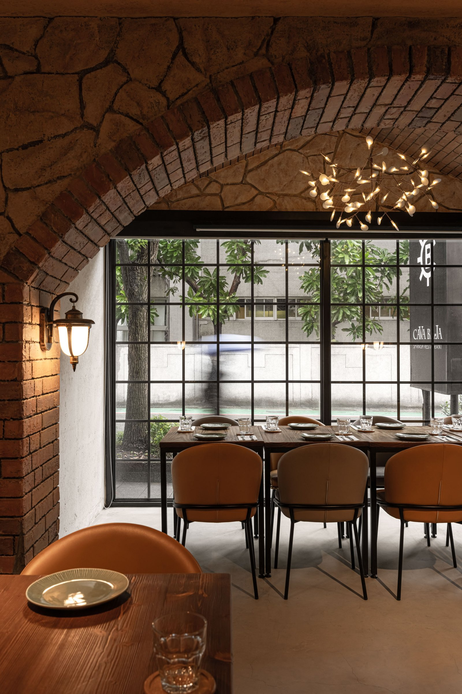
03
馬賽克吧台是整個空間最具操作力的元素。馬賽克不是展示性的材料，它的解讀方式是觸覺的、跟手指有關的。吧台的高度和寬度放寬，讓人坐下來之後手自然落在台面上。這不是設計細節，是放鬆的序列。
The mosaic bar top is the space's most operative element. Mosaic is not a visual material — it is read by touch, by fingertips. The bar is widened and lowered so when you sit, your hands naturally rest on the surface. This is not a design detail; it is a sequence of relaxation.
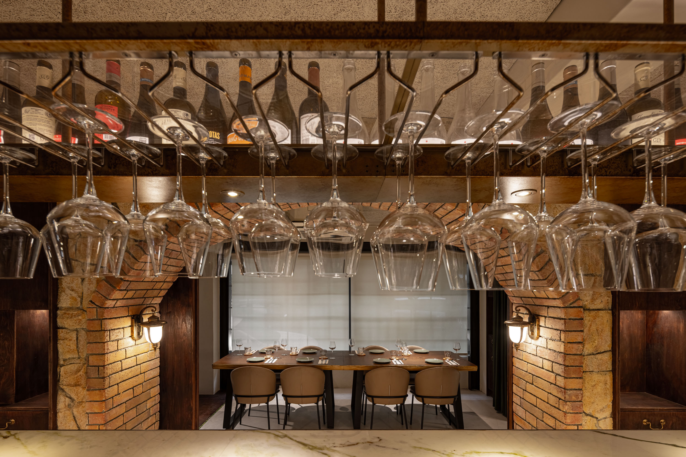
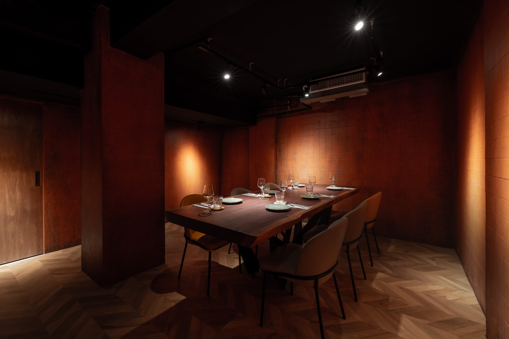
04
庭院的存在讓進入有了層次。庭院將一步切成兩段：先進來，停一下，再進去。這個停頓讓座位的期待能夠累積，而不是被直接消耗。
The courtyard gives entrance its layers. One step becomes two: enter, pause, then go in. That pause lets anticipation accumulate rather than being spent at once.
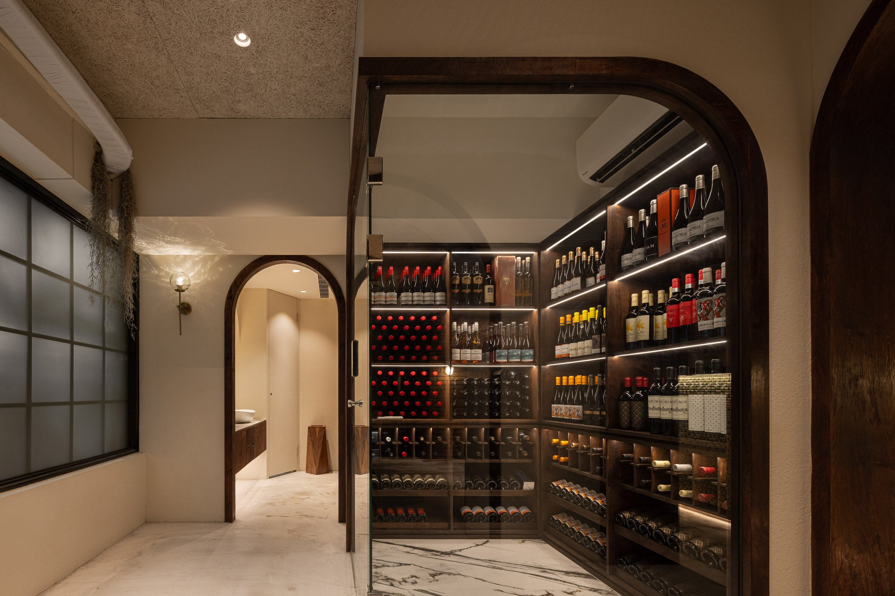
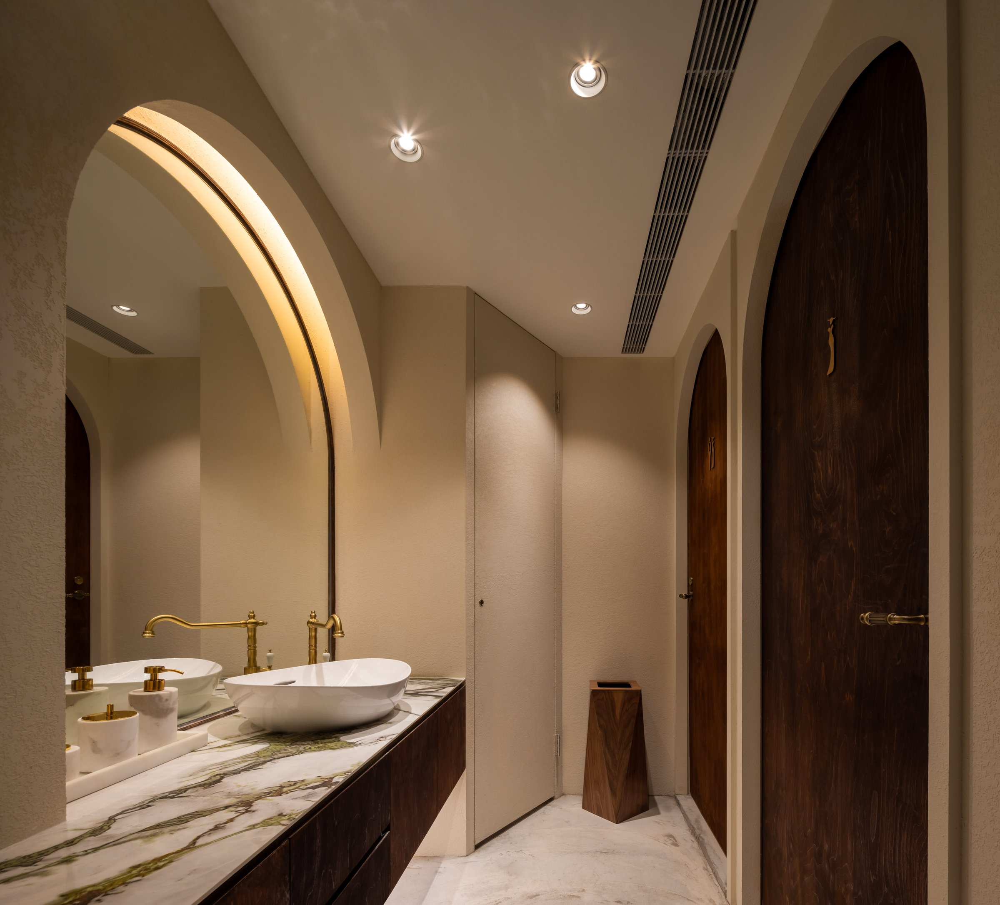
05
Cava Baja 最後要回答的問題不是「怎麼做出西班牙風格」，而是「怎麼讓一個新的空間擁有老地方才有的自在」。答案不在裝飾裡，在材質的選擇、座位的間距、光線的溫度——這些加在一起，讓人的身體比腦子更早知道：可以放鬆了。
Cava Baja's final question is not how to create Spanish style but how to give a new space the ease only old places possess. The answer is not in decoration — it is in material choice, seat spacing, light temperature. Together, they let the body know before the mind: you can relax.
All Photos